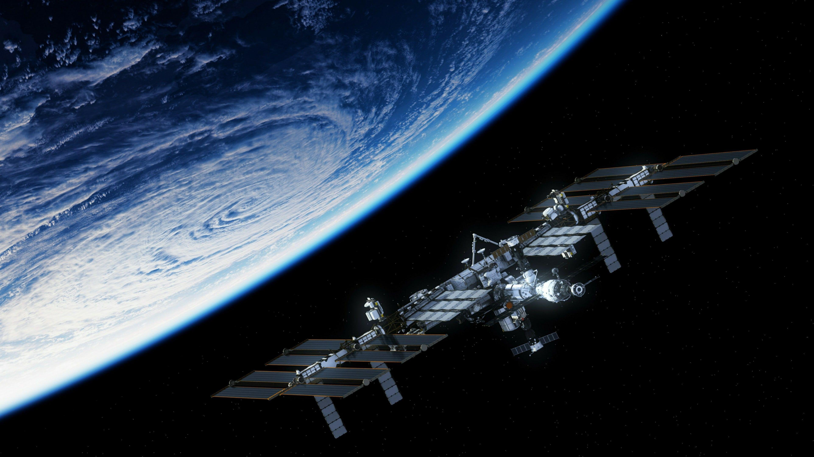
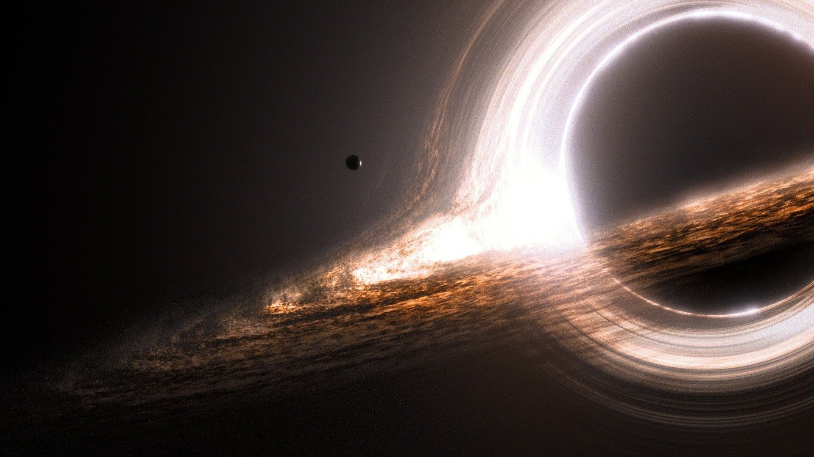
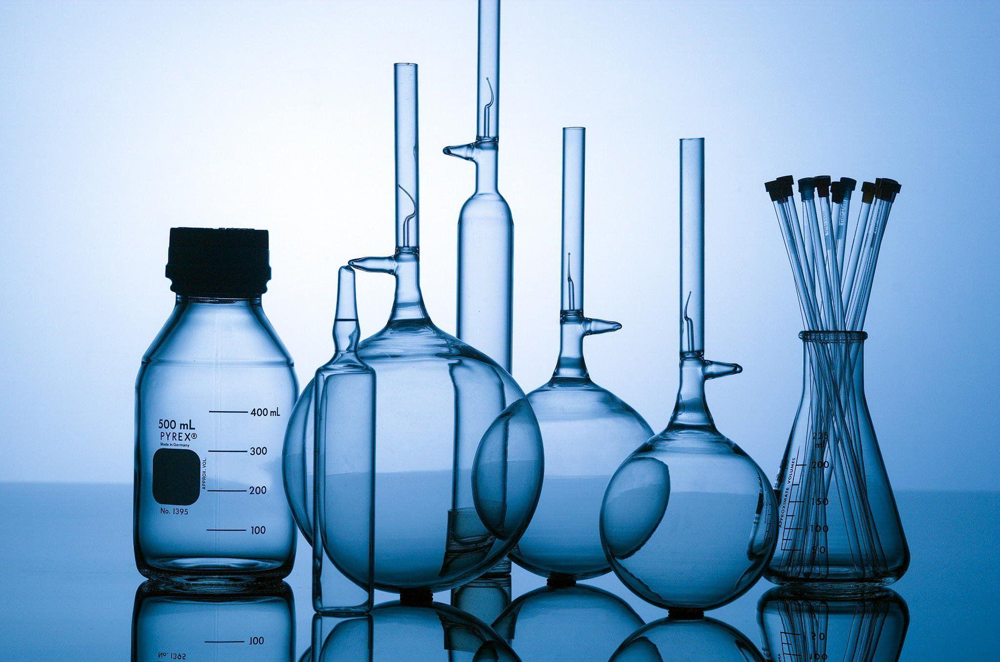
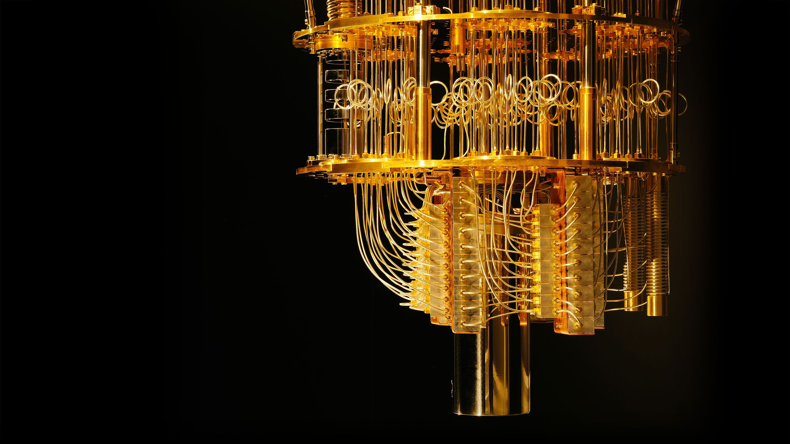

SCIENCE EDUCATION ACADEMY

Explore Your Favorite Science Subjects
Science is the systematic pursuit of knowledge about the natural world through observation and experimentation. It encompasses a vast array of disciplines, from the microscopic wonders of biology to the cosmic mysteries of astronomy. Science drives innovation, fuels technological advancements, and helps us understand the fundamental principles that govern our universe. By fostering curiosity and critical thinking, science empowers us to solve complex problems, improve our quality of life, and make informed decisions about our future. Whether exploring the depths of the ocean or the far reaches of space, science is a journey of discovery that continually expands our horizons.
Contents
| Subject | Main Contents | |
|---|---|---|
| Mathematics |
|
|
| Physics |
|
 |
| Chemistry |
|
 |
| Computer Science |
|
 |